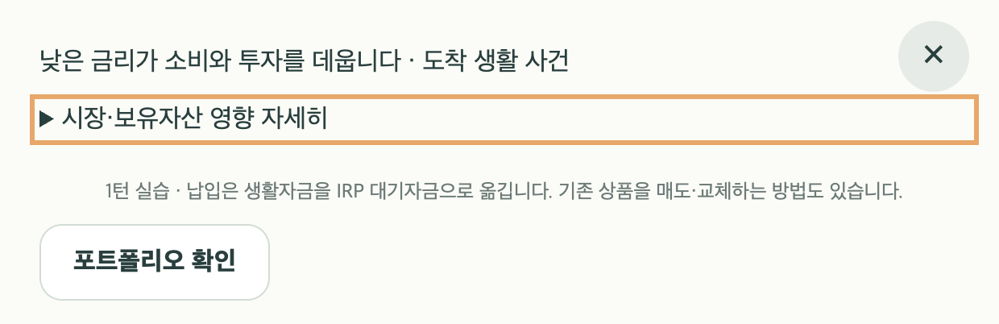
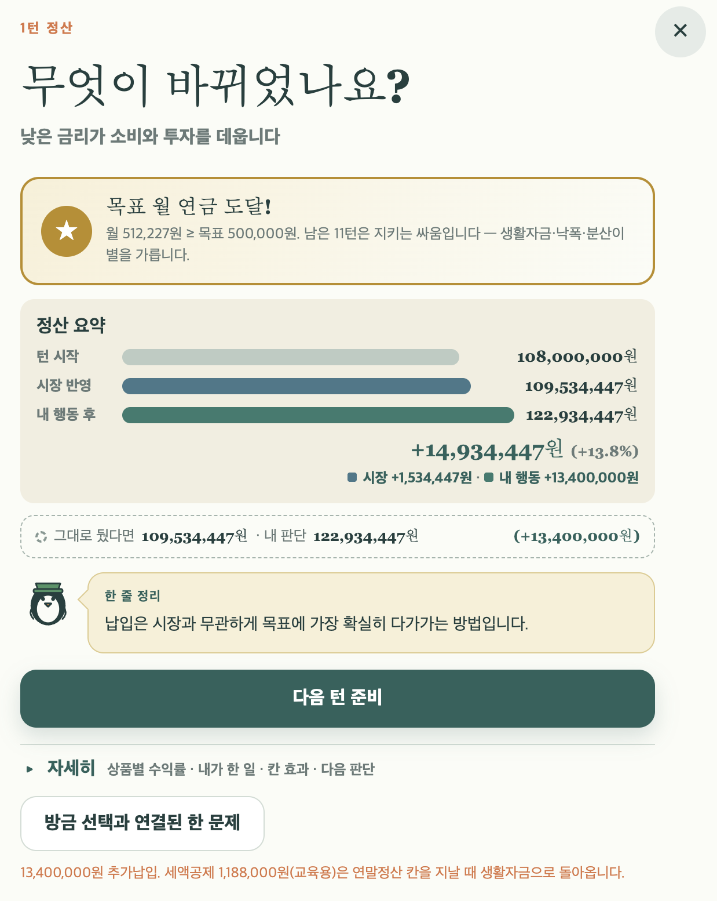

추가납입 속도 조정
1회 최대 200만원 · 같은 턴 합계도 200만원. 잔여 한도·납입 후 생활자금·실제 실행액을 함께 표시합니다.
포트폴리오 확인 위치, 시장 상세 메뉴, 추가납입 제한.
FB-004~006의 화면 변경과 게임 규칙을 함께 연결하는 구현 계획입니다.
새 게임의 개인 추가납입을 턴당 합계 200만원까지 허용하는 안을 권장합니다. 운용지시가 두 번인 턴도 이 한도를 공유합니다. 포트폴리오 확인은 각 운용 화면의 맨 아래로 통일하고, 시장 상세는 「상세 보기 / 접기」가 보이는 카드형 펼침 메뉴로 만듭니다.
1회 최대 200만원 · 같은 턴 합계도 200만원. 잔여 한도·납입 후 생활자금·실제 실행액을 함께 표시합니다.
운용 메뉴와 하위 입력 화면의 마지막에 공통 버튼 하나. 확인 후 돌아와 기존 선택을 이어갑니다.
테두리·배경·상태 문구·화살표로 강조합니다. 같은 턴에서 다른 입력을 바꾸어도 펼침 상태를 유지합니다.
권장 배포 방식: P0 엔진 및 저장 호환성 → 납입 화면 연결 → P1 화면 정리 → 통합 검증 순서로 진행하고, 검증 후 한 버전으로 배포합니다. 규칙 변경이 포함되므로 버전은 v1.6.0을 제안합니다.
이 문서는 구현 전 계획입니다. 본문 시안과 분석 스크립트는 게임과 분리되어 있으며, 서비스의 게임 코드·저장 데이터·배포에는 적용하지 않았습니다. 기존 FB-001~003은 완료 상태를 유지합니다.
캡처의 1턴 시장 반영 후 IRP는 109,534,447원입니다. 생활자금 1,340만원을 전부 넣으면 122,934,447원이 되어 월 512,227원에 도달합니다. 같은 시장 결과에서 200만원만 넣으면 월 약 464,727원으로, 목표 50만원에 다가가되 첫 턴에 넘어가지는 않습니다.
계산 기준은 현재 게임의 세전 예상 월 연금 = IRP 평가액 ÷ 240입니다. 사용자의 시드를 복원한 결과가 아니라 캡처 수치에 대한 산술 비교입니다.
contributionAmount = 100만원은 기본 버튼값입니다. 최대 납입 제한이 아니므로 이 값만 변경해도 「가능액」 버튼의 큰 납입은 남습니다.cashFlows에 턴과 종류가 기록됩니다. 같은 턴의 개인 납입 합계를 계산해 두 번째 행동에서도 잔여 한도를 반영할 수 있습니다.시장·상품 수익률, 목표 금액, 세액공제 계산을 이번 금액 제한의 조정 수단으로 바꾸지는 않습니다.
50개 시드 × 4개 시장 시나리오 × 5개 성향으로 후보별 1,000건을 대응 비교했습니다. 매 행동에서 가능한 최대액을 추가납입하고, 불가능하면 그대로 유지하는 실험입니다. 모든 생활 사건은 생활자금으로 처리하고, 상품 매매·퀴즈 응답은 수행하지 않았습니다.
| 턴당 한도 | 1턴 내 도달 | 3턴 내 도달 | 최초 도달 중앙값* | 12턴 말 달성 | 평균 납입 행동 |
|---|---|---|---|---|---|
| 신규 턴 한도 없음 | 94.4% | 98.8% | 1턴 | 88.6% | 4.04회 |
| 100만원 | 0.0% | 2.3% | 10턴 | 74.3% | 11.99회 |
| 200만원 · 권장 | 0.0% | 7.7% | 6턴 | 88.6% | 9.27회 |
| 300만원 | 0.0% | 21.3% | 4턴 | 88.6% | 6.66회 |
| 500만원 | 0.1% | 86.6% | 3턴 | 88.6% | 5.11회 |
* 12턴 중 한 번이라도 목표에 도달한 판만의 중앙값. 모든 비율의 분모는 후보별 1,000건입니다. 신규 턴 한도 없음도 현재 게임의 한 판 합산 납입 한도는 적용됩니다. 최종 목표 달성과 중간 도달은 다릅니다.
100만원은 도달 중앙값이 10턴이고 납입 행동이 평균 약 12회로, 납입을 계속 반복하게 만들 수 있습니다. 300만원은 4턴, 500만원은 3턴에 도달해 초반 집중 효과가 더 남습니다. 200만원은 목표 접근을 중반으로 분산시키는 첫 조정값으로 제안합니다.
반복감도 확인해야 합니다. 200만원도 최대 납입을 끝까지 반복하면 평균 9.27회의 행동을 납입에 씁니다. 이 전략에서 생활자금 부족 경험은 32.0%입니다. 한도를 모두 채우도록 유도하지 않고, 납입 후 생활자금을 보여 주며 매매·운용과의 선택을 남깁니다. 실제 플레이가 납입 반복에 치우치면 같은 측정으로 300만원 후보를 다시 비교합니다.
| 시장 시나리오 | 3턴 내 도달 · 현행 → 200만원 | 최초 도달 중앙값* · 현행 → 200만원 | 최종 달성 · 현행 → 200만원 |
|---|---|---|---|
| 금리의 두 얼굴 | 100.0% → 6.8% | 1 → 6턴 | 94.4% → 94.4% |
| 물가와의 경주 | 100.0% → 6.4% | 1 → 6턴 | 93.6% → 93.6% |
| 긴 겨울 | 95.2% → 0.8% | 1 → 6턴 | 67.6% → 67.6% |
| 회복의 파도 | 100.0% → 16.8% | 1 → 6턴 | 98.8% → 98.8% |
각 시나리오·후보는 250건입니다. 시드 50개를 성향·시장에 반복 적용했으므로 1,000개의 독립 시장 경로를 시험한 것은 아닙니다. 보너스 납입과 퇴직급여 이전을 선택하지 않은 실험이며, 해당 경로의 새 제한은 구현 후 따로 검증해야 합니다. 목표는 월 50만원으로 고정했습니다.
한도는 목표 도달을 특정 턴까지 금지하는 장치가 아닙니다. 낮게 설정한 목표, 큰 시장 상승, 퇴직급여 이전으로 일찍 도달할 가능성은 남습니다. 실제 이용자의 승률이나 재미를 확정하는 통계로 해석하지 않습니다.
| 항목 | 권장 규칙 | 플레이에서 보이는 결과 |
|---|---|---|
| 한 번에 넣을 수 있는 금액 | 해당 턴의 남은 한도 이내, 최대 200만원 | 생활자금이 1,340만원이어도 200만원까지만 선택 |
| 운용지시 2회 턴 | 같은 턴의 개인 납입 합계도 200만원 | 100만원 + 100만원 가능. 첫 행동 200만원 납입 후 추가납입은 비활성 |
| 미사용 한도 | 다음 턴으로 이월하지 않음 | 한 턴 쉬었다고 다음 턴 400만원을 넣을 수는 없음 |
| 새 턴 | 새로운 턴의 200만원 한도 적용 | 단, 생활자금과 한 판 누적 납입 한도가 더 작으면 그 금액까지만 가능 |
| 최소 금액 | 현재의 10만원 기준 유지 | 실제 가능액이 10만원 미만이면 사유와 함께 비활성 |
| 보너스 사건에서 개인 납입 | 같은 턴 한도를 공유 | 보너스로 150만원을 납입했다면 운용지시에서는 50만원만 더 납입 |
| 보너스 중 한도를 넘는 금액 | 생활자금으로 남김 | 「전액」 대신 「한도 내 납입」 등 실제 금액과 맞는 선택명 표시 |
| 퇴직급여의 IRP 이전 | 개인 추가납입 한도 계산에서 제외 | 기존 별도 재원·과세이연 체험을 유지. 큰 이전은 여전히 목표에 영향을 줌 |
| IRP 매수·매도·교체·옵트인/아웃 | 개인 납입 사용액에 포함하지 않음 | 계좌 안의 거래는 새 외부 납입이 아니며, 매도해도 턴 한도가 늘지 않음 |
| 중도인출 | 이미 사용한 해당 턴 납입 한도를 되돌리지 않음 | 출금 후 재납입으로 같은 턴 제한을 우회할 수 없음 |
| 행동 횟수 | 일반 납입 성공 시 1회, 실패·열람·X 닫기 시 0회 | 보너스 사건의 납입은 기존처럼 운용 행동을 차감하지 않지만 금액 한도는 공유 |
입력값 검증 후 음수 가능액은 0원으로 정리하고, 실행액은 가능액과 요청액 중 작은 원 단위 금액으로 산출합니다. 보너스는 일반 생활자금 잔고 대신 사건에서 실제 주어진 금액을 재원으로 계산합니다.
게임 규칙과 제도 설명을 분리합니다. 「턴당 200만원」에는 게임 진행용 한도라는 설명을 붙입니다. 현재 코드의 납입 한도 1,800만원·공제 대상 한도 900만원은 한 판에서 합산하는 기존 교육 모형 값으로 유지합니다. 이 계획은 실제 제도의 최신 금액을 새로 검수하거나 바꾸는 작업이 아닙니다.
시안은 운용지시가 두 번인 턴을 가정합니다. 100만원씩 두 번 또는 최대 200만원을 선택해 제한을 확인할 수 있습니다. 게임 엔진과 연결된 화면은 아닙니다.
한도만큼 납입하도록 강제하지 않습니다. 생활자금을 남기거나 이번 턴 납입을 건너뛰는 선택도 계속 가능합니다. 이번 범위에 자동 납입·새로운 수수료·생활자금 강제 보존 규칙은 추가하지 않습니다.
턴당 200만원까지 나누어 납입할 수 있어요.
게임 진행용 한도 · 상품 매수는 별도 운용지시입니다.
공제액은 현재 코드의 공제 대상 잔여 금액을 기준으로 산출합니다. 시안의 ‘다음 턴’은 한도만 갱신하며 시장·급여·사건을 실행하지 않습니다.
src/engine/contribution-engine.ts에 게임 한도·남은 금액·실행액을 계산하는 순수 함수를 둡니다. 일반 납입과 사건 납입은 이 계산을 공유하되, 제공할 재원만 다르게 전달합니다. 화면의 판단과 엔진 실행 모두 같은 견적을 사용합니다.
// 제안 인터페이스 · 구현 전 설계
contributionBudget(state)
→ { perTurnLimit, usedThisTurn, turnRemaining, annualRemaining }
previewContribution(state, { requested, availableSource })
→ { requested, accepted, remainingAfter, limitedBy, availability }
일반 납입: availableSource = state.cash
보너스 납입: availableSource = event의 납입 대상 금액
usedThisTurn = cashFlows 중 현재 턴 · kind=contribution의 양수 금액 합계
UI / 빠른 금액 / 메뉴 활성화 / 실제 실행 / 사건 선택지
↓ 같은 계산 함수game-engine을 import하지 않아 순환 의존성을 피합니다. 기존 acceptedContribution·contributionConstraint는 위 결과를 사용하거나 호환 래퍼로 유지합니다.BlockCode에 턴 한도 제한 사유를 추가하고 actionAvailability까지 연결합니다. 보너스에는 별도 ‘행동 타이밍’ 판정을 잘못 적용하지 않습니다.진행 중인 판에 새 한도를 소급하면 이미 한 턴에 많이 납입한 기록과 충돌합니다. 진행 중 저장은 기존 규칙으로 마치고, 새 판부터 적용하는 방식을 권장합니다.
// GameState에 선택 필드로 추가하는 제안
contributionPacing?: {
version: 'v1';
perTurnLimit: 2000000;
}
필드가 없는 저장 → 이전 규칙, 새 턴 한도 없음
필드가 있는 저장 → 판 생성 시 저장한 한도를 계속 사용balance-config.json에는 새 게임 기본값을 추가하되 policy-rules.json과 기본 금액 버튼값을 한도 자체로 사용하지 않습니다.GameOptions의 명시적 옵션과 실제 새 판 생성 경로에 적용합니다. 옵션을 생략한 기존 테스트·구버전 검증 경로는 기존 동작을 유지합니다.c3는 디폴트옵션 장부도 판별합니다. 이를 일괄 다른 버전으로 바꾸지 않고 추가납입 규칙의 별도 버전을 두어 기존 직접매매 기능의 판정을 보존합니다.이전 저장에서 납입 화면을 열면 「이전 규칙으로 진행 중」을 표시하고, 적용되지 않는 200만원 한도 안내는 보여 주지 않습니다. 일반 하위 입력의 새로고침 복원 범위를 확장하는 작업은 포함하지 않으며, 기존 포트폴리오 왕복 보존과 디폴트옵션 초안 복원은 회귀 검증합니다.
renderModal의 운용 창 구성을 기존 시장 안내 → 행동 본문 → 피드백 → 포트폴리오 하단으로 정리합니다. 디폴트옵션은 현재처럼 시장 안내를 생략하고 같은 하단을 사용합니다.
renderDefaultTrade 내부 포트폴리오 버튼을 제거하고 data-action="action-portfolio"를 가진 버튼은 공통 하단에서만 생성합니다. 포트폴리오 외의 다른 모달에는 하단을 삽입하지 않습니다.details/summary를 유지합니다. summary 안에 버튼을 중첩하지 않고, 상태 문구는 텍스트로 표현합니다.toggle 이벤트를 캡처해 UI 상태를 기록하고, 다음 렌더의 open 속성에 반영합니다. 프로그램에 의한 갱신이 다시 불필요한 렌더를 일으키지 않게 동일 값은 무시합니다.| 변경 영역 | 주요 파일 | 완료 기준 |
|---|---|---|
| 한도 모델·공통 계산 | src/types.tssrc/data/balance-config.jsonsrc/engine/contribution-engine.ts (신규)src/engine/action-constraints.ts | 실행·미리보기·메뉴가 같은 수락액과 사유 사용 |
| 일반 납입·사건 납입 | src/engine/game-engine.tssrc/engine/life-engine.tssrc/engine/action-availability.ts | 두 행동·보너스의 합산 한도와 재원별 처리 |
| 하단·시장 상세·금액 표시 | src/ui/app.tssrc/ui/default-trade-view.tssrc/styles/main.css | 포트폴리오 버튼 한 개, 접힘 상태·입력 보존 |
| 저장·복기·공유 | src/ui/play-checkpoint.tssrc/engine/scenario-engine.ts (복기 전달 확인)src/engine/achievements.tssrc/ui/app.ts (새 판·내보내기) | 구 저장 호환, 새 규칙 검증, 분기/공유의 규칙 식별 |
| 관련 설명·회귀 검증 | public/user-manual.htmlpublic/operator-manual.html납입 관련 학습 문구·도움말 및 tests/docs/implementation/ (구현 후 기록) | 게임 한도와 제도 설명 구분, 기존 거래·세제 검증 유지 |
200만원 한도 계산, 납입 장부, 일반/보너스 경로, 새 판 옵션, 구 저장 호환을 구현합니다.
잔여 한도, 빠른 금액, 실행액, 비활성 사유를 연결하고 두 번째 행동까지 검증합니다.
공통 하단과 강조 메뉴를 함께 적용하고 X·입력·왕복·펼침 상태를 확인합니다.
회귀 검사와 실제 플레이 후 매뉴얼·구현 기록을 갱신하고 GitHub/Vercel에 배포합니다.
각 단계가 통과한 뒤 다음 단계로 넘어갑니다. 1~3단계는 작업 단위이며 사용자에게 미완성 규칙을 중간 배포하는 단계가 아닙니다. 배포 작업은 별도 구현 요청을 받은 뒤, 기존에 승인된 버전관리·배포 흐름으로 진행합니다.
| 검증 | 입력·조작 | 기대 결과 |
|---|---|---|
| 캡처의 큰 납입 | 생활자금 1,340만원, 사용액 0원 | 최대 200만원. 실제 차감·IRP·미리보기·공제 기준액 일치 |
| 두 번 나누어 납입 | 운용지시 2회에서 100만원 + 100만원 | 합계 200만원, 각 행동 1회 차감. 첫 200만원 선택 시 두 번째 추가납입은 비활성 |
| 다른 운용지시 | 한도 소진 후 대기자금으로 매수/옵트인 | 실제 거래 조건이 맞으면 계속 가능. 납입 제한이 모든 메뉴로 번지지 않음 |
| 최소·상한 경계 | 잔여 가능액 10만원 / 99,999원 / 누적 한도 15만원 | 10만원 허용, 미만 차단, 15만원만 수락. 수락액보다 큰 버튼 표시 없음 |
| 잘못된 입력 | NaN·Infinity·0·음수·과도한 요청액 | 잘못된 입력은 미실행. 유효한 초과액은 공통 견적의 가능액으로 제한, 화면과 결과 동일 |
| 새 턴·닫기·복원 | 같은 턴 X/포트폴리오/새로고침, 이후 새 턴 | 같은 턴의 사용액 보존, 새 턴에 200만원, 미사용액 이월 없음 |
| 보너스 경로 | 보너스 500만원 중 한도 내 납입 | 200만원 IRP, 300만원 생활자금. 같은 턴 일반 납입 0원, 사건은 운용 행동을 차감하지 않음 |
| 퇴직급여·중도인출 | 퇴직급여 이전 / 같은 턴 납입 후 허용 인출 | 이전은 개인 한도 제외. 인출해도 사용한 개인 한도는 되돌리지 않음 |
| 장부·공제·정산 | 제한된 납입과 환급, 종료 정산 | 재원·납입 합계·환급 대기·시장 대비 행동 효과가 실제 수락액과 일치 |
| 저장 호환 | c2/c3 구 저장, 새 판 저장, 챕터 분기, 손상된 새 규칙 필드 | 정상 구 저장은 기존 규칙. 새 규칙은 분기까지 검증. 손상 값이 한도 우회로 쓰이지 않음 |
| 포트폴리오 위치·왕복 | 운용 메뉴와 6개 하위 운용 화면 | 포트폴리오 버튼 1개, 실제 본문 끝. 왕복 후 금액·상품·초안 유지, 행동 차감 0 |
| 시장 펼침 유지 | 터치/Enter/Space로 펼침 → 금액 변경 → 포트폴리오 왕복 | 접기 문구·화살표·접근성 상태 일치. 같은 턴 유지, 새 턴 접힘 |
| 화면 크기 | 320·390·430px, 데스크톱, 글자 확대 200% | 가로 넘침·버튼 겹침 없음. 하단 버튼 접근 가능, X와 내용 분리, 포커스 표시 |
| 게임 밸런스 | 동일 5,000건을 구현 엔진으로 재실행 + 매매 혼합·세 미션·목표 범위 플레이 | 턴 한도 위반 0. 탐색 실험과 차이는 원인을 설명. 납입 반복감과 실제 거래 기회 확인 |
한도·사건·저장 경계는 의미 있는 엔진 테스트로 고정합니다. 기존 action-availability, life-choices, p0-ledger, stage-c/d-ui, default-trading-ui 테스트를 필요한 부분만 확장합니다. CSS 값 자체를 복제하는 테스트는 추가하지 않습니다.
npm test
npm run typecheck
npm run lint
npm run build
# 구현 후: 새 규칙을 켠 엔진으로 후보 비교와 기존 시뮬레이션 실행
# 브라우저: 시작 → 납입 → 2회 행동 → 포트폴리오 왕복 → 사건 → 정산 → 복원회귀 검사 뒤에는 모바일에서 시장 상세를 눌러 보고, 100만원씩 두 번 납입한 후 남은 메뉴를 확인합니다. 일반 납입·옵트인·리밸런싱을 섞은 판도 끝까지 진행해 ‘한도가 생겼지만 납입만 반복하게 되는지’를 점검합니다. 검사 완료 후 배포된 버전으로 동일 핵심 동선을 한 번 확인합니다.
구현 기록: 이 문서는 승인 당시의 제안과 실험을 보존한 계획서입니다. FB-004~006은 v1.6.0에서 구현했습니다. 실제 코드 검증과 브라우저 확인 결과는 구현·검증 기록을 참고하세요. 아래 후보 비교는 계획 단계 실험이며, 실제 엔진 검증 결과는 별도 기록합니다.


재실행: 프로젝트 루트에서 node --import tsx docs/backlog/analysis/2026-09-12-contribution-pacing.mjs. 분석은 기존 엔진에 보내는 요청액만 제한합니다. 게임 소스나 저장 데이터는 변경하지 않습니다.
{kind=link}
{kind=link}